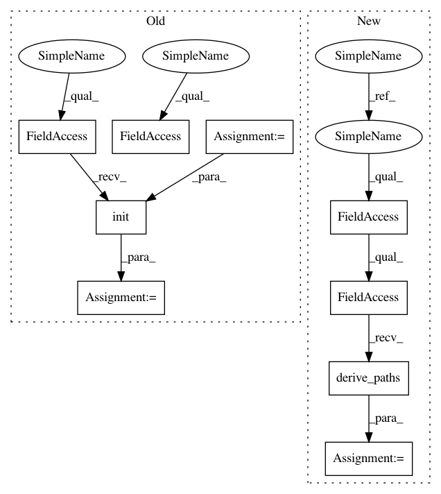

ed374e43783ff6cb58850aef22e4fa447ebbde61,src/pudl/convert/ferc1_to_sqlite.py,,main,#,34
Before Change
coloredlogs.install(fmt=log_format, level="INFO", logger=logger)
args = parse_command_line(sys.argv)
script_settings = pudl.settings.read_script_settings(args.settings_file)
pudl_settings = pudl.settings.init(
pudl_in=script_settings["pudl_in"],
pudl_out=script_settings["pudl_out"]
)
// Make sure the required input files are available before we go doing a
// bunch of work cloning the database...
pudl.helpers.verify_input_files(
ferc1_years=script_settings["ferc1_to_sqlite_years"],
After Change
except KeyError:
pudl_out = pudl.workspace.setup.get_defaults()["pudl_out"]
pudl_settings = pudl.workspace.setup.derive_paths(
pudl_in=pudl_in, pudl_out=pudl_out)
// Make sure the required input files are available before we go doing a
// bunch of work cloning the database...
pudl.helpers.verify_input_files(
In pattern: SUPERPATTERN
Frequency: 3
Non-data size: 9
Instances
Project Name: catalyst-cooperative/pudl
Commit Name: ed374e43783ff6cb58850aef22e4fa447ebbde61
Time: 2019-08-20
Author: cgosnell@catalyst.coop
File Name: src/pudl/convert/ferc1_to_sqlite.py
Class Name:
Method Name: main
Project Name: catalyst-cooperative/pudl
Commit Name: ed374e43783ff6cb58850aef22e4fa447ebbde61
Time: 2019-08-20
Author: cgosnell@catalyst.coop
File Name: src/pudl/convert/epacems_to_parquet.py
Class Name:
Method Name: main
Project Name: catalyst-cooperative/pudl
Commit Name: ed374e43783ff6cb58850aef22e4fa447ebbde61
Time: 2019-08-20
Author: cgosnell@catalyst.coop
File Name: src/pudl/cli.py
Class Name:
Method Name: main